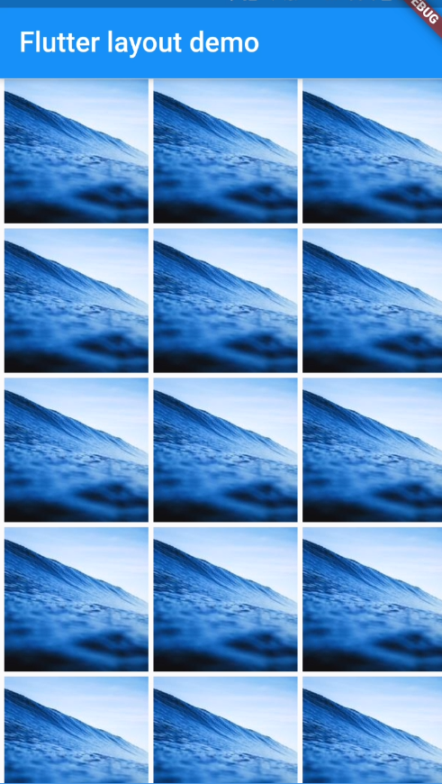
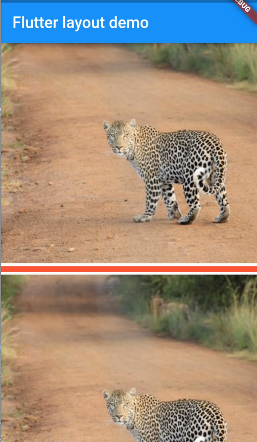

[Flutter] Layout - GridView and ListView
當畫面內容很長時，既需要可以滾動 (scrollable)，基本上有兩種可以用 Gridview 和 ListView，稍微紀錄一下使用的方式
GridView
GridView 有兩種決定每一列能放多少項目的方式
- GridView.count: 設定
crossAxisCount來指定每一列要放多少欄， - GridView.extent: 設定
maxCrossAxisExtent來讓 widget 自行計算每一列可以放多少欄
其他可以用的設定屬性
- padding: GridView 外圍的距離
mainAxisSpacing橫向的寬度crossAxisSpacing縱向的寬度- children 要放入 GridView 的 widgets
childAspectRatio放大比例dragStartBehavior設定活動的觸發時間點DragStartBehavior.start: 當拖拉事件發生時才設定初始位置DragStartBehaviro.down: 當按到畫面時就設定初始位置

範例程式
1 | Widget _buildGrid() => GridView.extent( |
ListView
ListView 就很單純是清單列表
scrollDirection: 設定滾動方向- Axis.verticle 垂直滾動
- Axis.horizontal: 水平滾動
假設在每一個 listItem 中間顯示分隔線，ListView 也有提供方法做到這件事情，範例程式碼如下
1 | ListView.separated( |

Lifecycle
ListView 有一個需要注意的地方是，他並不是所有的清單內的項目都會被建立，只有在顯示範圍內的才會變建立出來，而離開視線範圍的，就會被摧毀，細節說明可以參閱[此文件 的 Child elements’ lifecycle section] (https://api.flutter.dev/flutter/widgets/ListView-class.html)
範例程式
1 | Widget _buildList() => ListView( |
小結
當然除了這兩個 widget 之外，其他還有所謂的 table 或是 DataTable widget，但這部分就留到後面在探索了，關於 Layout 相關的 widget，就可參閱這份文件，裡面有更詳細的說明